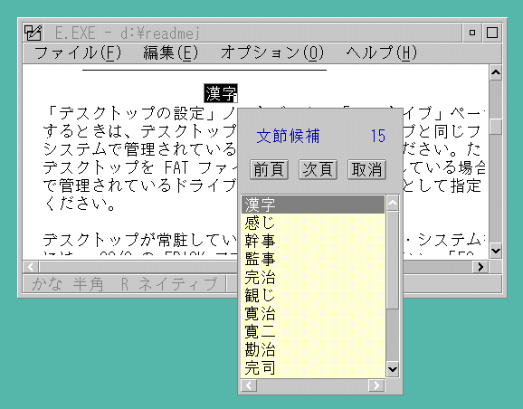

Japanese Input Method - Kana-to-Kanji Conversion
Since thousands of Kanji characters cannot be inputted efficiently with
multi-shift keyboard, Kanji input requires an additional conversion mechanism
called Kana-to-Kanji Conversions or Japanese Input Methods. This keyboard
input mechanism are normally operated in a process like this:
- Press a key to get into the Input Method mode.
In the input method mode, the keyboard mode can be any mode that the system
supports. However, the Kana-to-Kanji Conversion can convert the Hiragana
character to Kanji character, so the keyboard is set to Hiragana mode in
default.
- Input a single character or a character string
of Hiragana, called YOMI string. Note that, the YOMI is shown to the user
but is not given to application yet.
- Press a key (called Convert Key) to convert the
YOMI string into Kanji candidate string. The candidate string is also shown
but not given to application.
- If the candidate string is what the user looking
for, the user must press the enter key to confirm and get the candidate
string. Then the string is passed to application. The enter key in this
case is called fix key or confirm key.
- If the candidate string is not what the user
looking for, the user can press the convert key again to look for the next
candidate string. The user can also press an All Candidate Key to request
the conversion logic to show all the candidate strings. These are shown
by a pop-up windows, a list box or in the keyboard status line.
Like the keyboard modes, the input methods also show their status in the
keyboard status line. Most system software products such as OS/2 and DOS/V
provide the input methods, and also there are several popular input method
programs separately that are provided by Independent Software Vendors.
The Japanese keyboard and input method shows an OS/2 J PM application program
(System Editor), with the Japan keyboard status line and the input method
(Kana-Kanji-Conversion) in processing. The On-The-Spot conversion, the
YOMI buffer is displayed at the current cursor position and the All-Candidates
panel is displayed beside it.
Japanese keyboard and input method
[Back: Japanese Keyboard]
[Next: Korean Keyboard and Korean Input Methods]